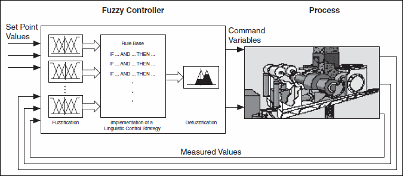

The most common use case for fuzzy controllers is in closed-loop control structures. The most basic structure of closed-loop control applications uses sensor signals as input signals for the system and the outputs as command values to drive the actuators of the process. The following image shows a simple closed-loop control structure with a fuzzy controller.

Pure fuzzy control applications are more the exception than the rule. In most cases the fuzzy controller outputs serve as reference parameters, such as gains, that you provide to a conventional controller instead of directly to driving actuators.
Because you can regard a fuzzy controller as a nonlinear characteristic field controller, it has no internal dynamic aspects. Thus, you must implement any dynamic property by an appropriate preprocessing of the measured input data.
PID and Fuzzy Logic VIs enable you to integrate fuzzy controllers and PID control. For example, you can use fuzzy controllers with conventional PID controllers or create hybrid fuzzy-PI controllers. Use either the Fuzzy System Designer or the Fuzzy Logic VIs to design a fuzzy system. Then use the FL Fuzzy Controller VI to implement a fuzzy controller for the fuzzy system. Finally, you can integrate the fuzzy controller into a control structure you create using the PID VIs.